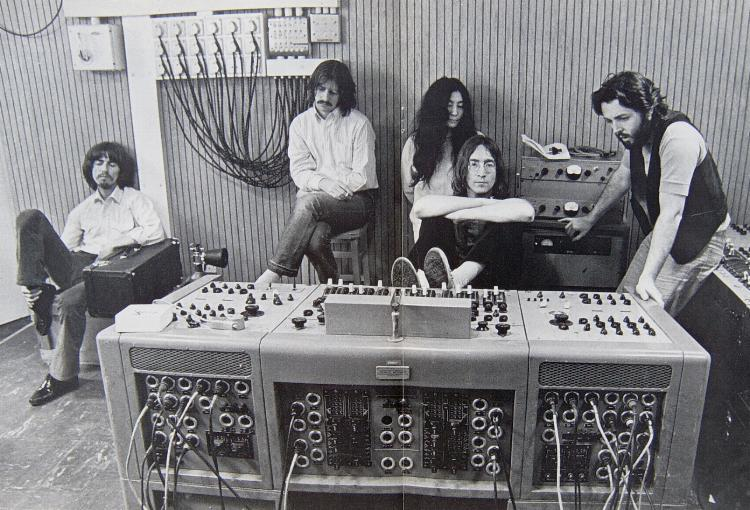

| Kobal Collection | ||
| Back 12/21 |
 | Next 14/21 |
January 1969 and the gradually-disintegrating Beatles are at Twickenham Studios listening back - with varying degrees of interest - to sessions that would finally appear on the album and film of Let It Be. |